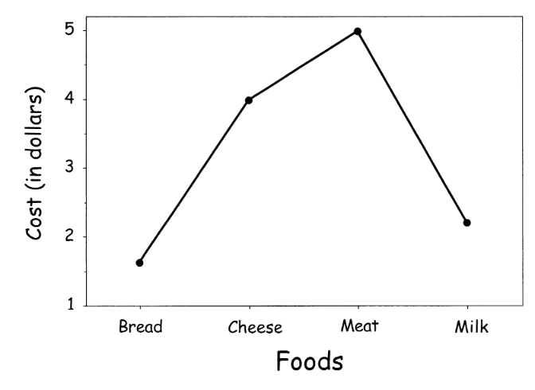
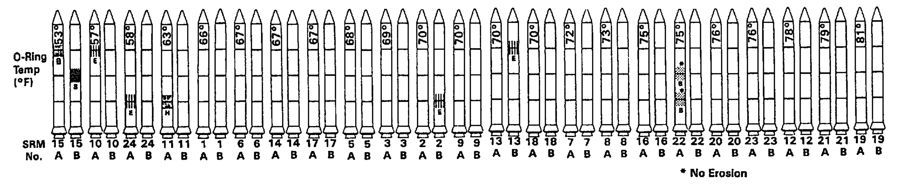

| name | region | income | population | lifeExpectancy | |
|---|---|---|---|---|---|
| 0 | Angola | Sub-Saharan Africa | 5055.59 | 12707546 | 47.58 |
| 1 | Benin | Sub-Saharan Africa | 1457.57 | 8294941 | 61.89 |
| 2 | Botswana | Sub-Saharan Africa | 12282.28 | 1638393 | 55.12 |
| 3 | Burkina Faso | Sub-Saharan Africa | 1234.42 | 14761339 | 53.38 |
| 4 | Burundi | Sub-Saharan Africa | 457.07 | 8691005 | 50.95 |
| 5 | Cameroon | Sub-Saharan Africa | 1997.18 | 18054929 | 51.39 |
| 6 | Cape Verde | Sub-Saharan Africa | 3456.14 | 426113 | 71.68 |
| 7 | Chad | Sub-Saharan Africa | 1557.83 | 10541156 | 48.97 |
| 8 | Comoros | Sub-Saharan Africa | 1016.42 | 731281 | 65.77 |
| 9 | Congo, Dem. Rep. | Sub-Saharan Africa | 358.80 | 66604314 | 47.81 |
| 10 | Congo, Rep. | Sub-Saharan Africa | 3834.67 | 3903318 | 53.75 |
| 11 | Cote d'Ivoire | Sub-Saharan Africa | 1520.23 | 18373060 | 57.86 |
| 12 | Equatorial Guinea | Sub-Saharan Africa | 15342.20 | 562339 | 50.64 |
| 13 | Eritrea | Sub-Saharan Africa | 548.37 | 5028475 | 60.03 |
| 14 | Ethiopia | Sub-Saharan Africa | 812.16 | 78254090 | 55.69 |
| 15 | Gabon | Sub-Saharan Africa | 12704.99 | 1484149 | 60.89 |
| 16 | Ghana | Sub-Saharan Africa | 1382.95 | 23336661 | 56.83 |
| 17 | Guinea | Sub-Saharan Africa | 908.86 | 10211437 | 58.35 |
| 18 | Guinea-Bissau | Sub-Saharan Africa | 568.94 | 1502442 | 48.20 |
| 19 | Kenya | Sub-Saharan Africa | 1493.53 | 36529155 | 54.95 |
Data Analytics and Visualization
0-2: Introduction to Visualization
Why is effective visualization important?
January 26, 1986
Challenger Mission


Crew of 7: Dick Scobee, Michael Smith, Ellison Onizuka, Judith Resnik, Ronald McNair, Gregory Jarvis, and Chirsta McAuliffe.
A cold launch day

Engineering concerns

Last minute debate

A predictable failure
Plume indicating an O-ring failure at launch

Tragedy

What went wrong?
Tufte’s take
“…there was a clear proximate cause: an inability to assess the link between cool temperature and O-ring damage on earlier flights…”
“…rocket engineers and managers needed a quick, smart analysis of evidence about the threat of cold to the O-rings, as well as an effective presentation of evidence in order to convince NASA offcials not to launch”
- Edward Tufte, Visual Explanations

Morton Thiokol Charts

Tufte’s version
Why create visualizations?
Make informed descisions
The challenger disaster shows the importance of this
Exploration - Understand data
What are the differences between these 4 datasets?
Exploration - Understand data
We could try using some basic tools from statistics to answer this question. e.g. means, variances, corrleations, regression coefficients, etc.
Exploration - Understand data
They’re the same for every dataset?!?!
- Can we conclude that the datasets are all the same?
Exploration - Anscombe’s quartet

Visualization shows there’s much more going on!
Another story…
Link to more entertaining retelling: here
1854 Broad Street cholera outbreak
Cholera was a deadly disease in 1850’s London
Thought to be caused by miasma or “bad air”
An especially bad outbreak happend in Soho in 1854…

Jon Snow
John Snow

John Snow’s map

John Snow’s map
The source: A pump with contaminated water
Validation
Even if we think we know what’s going on, we should visualize to check our understanding!
- 1980: Jackman shows the effect of earlier work is dominated by an outlier
Communication, inspriation & activism
Visualization is a powerful tool to share information with the world and inspire change
W. E. B. DuBois
Sociologist and civil rights activist W. E. B. Du Bois made many influential visualizations.

Nigel Holmes
Graphic designer Nigel Holmes is known for playful and informative visualizations.


Mona Chalabi
Contemporary data journalist Mona Chalabi uses visualization to create impactful stories and inspire activism.

How should we approach visualization?
Visual language
Like language, visualization is a medium for communication
Bertin: A Semiology of Graphics

Images perceived as a set of signs
Sender encodes information in signs
Receiver decodes information from signs
- Jacques Bertin - Sémiologie Graphique, 1967
Visualization communicates information efficiently
We can process much more information from the visualization than the table.
Visual semantics

From Jeffery Heer
What can we understand from this plot?
Visual semantics
From Jeffery Heer
What can we understand from this plot?
- A, B, C are distinguishable
- B is between A and C
- BC is twice as long as AB
“Resemblance, order and proportional are the three signfields in graphics.” - Bertin
What tools do we have to communicate through visualization?
What is our vocabulary?
Bertin’s visual variables
Exercise!
Sketch a visualization of this small dataset
What was your strategy?
Grammar of Graphics
A framework for building visualizations
Grammar of graphics
Original grammar of graphics was introduced by Leland Wilkinson

We’ll focus on an updated version from Hadley Wickham that forms the basis for ggplot2 and Let’s Plot.
Reminder: ggplot
ggplot2 is a hugely influential visualization library.
- Designed by Hadley Wickham
- Only for the R language
Let’s Plot is a port for Python (and Kotlin)
- We’ll be using it in this class
Components of the grammar of graphics
Stretching the metaphor: The parts of speech for our visual language
- Data
- Aesthetic mappings
- Geometries
- Transforms
- Scales
- Coordinate systems
- Faceting systems
- Annotations
How to build a plot
Start with tidy data
Clearly define the observations and variables in our dataset
| name | region | income | population | lifeExpectancy | |
|---|---|---|---|---|---|
| 0 | Angola | Sub-Saharan Africa | 5055.59 | 12707546 | 47.58 |
| 1 | Benin | Sub-Saharan Africa | 1457.57 | 8294941 | 61.89 |
| 2 | Botswana | Sub-Saharan Africa | 12282.28 | 1638393 | 55.12 |
| 3 | Burkina Faso | Sub-Saharan Africa | 1234.42 | 14761339 | 53.38 |
| 4 | Burundi | Sub-Saharan Africa | 457.07 | 8691005 | 50.95 |
| 5 | Cameroon | Sub-Saharan Africa | 1997.18 | 18054929 | 51.39 |
| 6 | Cape Verde | Sub-Saharan Africa | 3456.14 | 426113 | 71.68 |
| 7 | Chad | Sub-Saharan Africa | 1557.83 | 10541156 | 48.97 |
| 8 | Comoros | Sub-Saharan Africa | 1016.42 | 731281 | 65.77 |
| 9 | Congo, Dem. Rep. | Sub-Saharan Africa | 358.80 | 66604314 | 47.81 |
| 10 | Congo, Rep. | Sub-Saharan Africa | 3834.67 | 3903318 | 53.75 |
| 11 | Cote d'Ivoire | Sub-Saharan Africa | 1520.23 | 18373060 | 57.86 |
| 12 | Equatorial Guinea | Sub-Saharan Africa | 15342.20 | 562339 | 50.64 |
| 13 | Eritrea | Sub-Saharan Africa | 548.37 | 5028475 | 60.03 |
| 14 | Ethiopia | Sub-Saharan Africa | 812.16 | 78254090 | 55.69 |
Define an aesthetic mapping
Our aesthetic mapping defines how we’ll map each data dimension (variable) to a corresponding visual dimension (aesthetic)
| name | region | income | population | lifeExpectancy | |
|---|---|---|---|---|---|
| 0 | Angola | Sub-Saharan Africa | 5055.59 | 12707546 | 47.58 |
| 1 | Benin | Sub-Saharan Africa | 1457.57 | 8294941 | 61.89 |
| 2 | Botswana | Sub-Saharan Africa | 12282.28 | 1638393 | 55.12 |
| 3 | Burkina Faso | Sub-Saharan Africa | 1234.42 | 14761339 | 53.38 |
| 4 | Burundi | Sub-Saharan Africa | 457.07 | 8691005 | 50.95 |
| 5 | Cameroon | Sub-Saharan Africa | 1997.18 | 18054929 | 51.39 |
| 6 | Cape Verde | Sub-Saharan Africa | 3456.14 | 426113 | 71.68 |
| 7 | Chad | Sub-Saharan Africa | 1557.83 | 10541156 | 48.97 |
| 8 | Comoros | Sub-Saharan Africa | 1016.42 | 731281 | 65.77 |
| 9 | Congo, Dem. Rep. | Sub-Saharan Africa | 358.80 | 66604314 | 47.81 |
| 10 | Congo, Rep. | Sub-Saharan Africa | 3834.67 | 3903318 | 53.75 |
| 11 | Cote d'Ivoire | Sub-Saharan Africa | 1520.23 | 18373060 | 57.86 |
| 12 | Equatorial Guinea | Sub-Saharan Africa | 15342.20 | 562339 | 50.64 |
| 13 | Eritrea | Sub-Saharan Africa | 548.37 | 5028475 | 60.03 |
| 14 | Ethiopia | Sub-Saharan Africa | 812.16 | 78254090 | 55.69 |
| 15 | Gabon | Sub-Saharan Africa | 12704.99 | 1484149 | 60.89 |
| 16 | Ghana | Sub-Saharan Africa | 1382.95 | 23336661 | 56.83 |
| 17 | Guinea | Sub-Saharan Africa | 908.86 | 10211437 | 58.35 |
| 18 | Guinea-Bissau | Sub-Saharan Africa | 568.94 | 1502442 | 48.20 |
| 19 | Kenya | Sub-Saharan Africa | 1493.53 | 36529155 | 54.95 |
Define an aesthetic mapping
Our aesthetic mapping defines how we’ll map each data dimension (variable) to a corresponding visual dimension (aesthetic)
| name | region | income | population | lifeExpectancy | |
|---|---|---|---|---|---|
| 0 | Angola | Sub-Saharan Africa | 5055.59 | 12707546 | 47.58 |
| 1 | Benin | Sub-Saharan Africa | 1457.57 | 8294941 | 61.89 |
| 2 | Botswana | Sub-Saharan Africa | 12282.28 | 1638393 | 55.12 |
| 3 | Burkina Faso | Sub-Saharan Africa | 1234.42 | 14761339 | 53.38 |
| 4 | Burundi | Sub-Saharan Africa | 457.07 | 8691005 | 50.95 |
In our example:
- Income -> x position
- Life exp. -> y position
- Population -> size
- Region -> color
Examples of visual encoding dimensions
The set of possible encodings depends on the variable type
Categorical variables have a different space of possibilities

Choose a geometry
How do we represent each observation?
Here we are representing each observation with a distinct point in 2-d space (a scatterplot).
Many different geometries
Geometries are abstract
The same geometry might be rendered in different ways

Geometries are abstract
Diffent geometries may have different requirements (and options) for aesthetics:
Point: x and y coordinates
Line: x and y coordinates, order
Bar: x or y coordinate, length
Text: x and y coordinates, text
Interval: x coordinate, min, max
Boxplot: Median, quantiles

Define a scale for each mapping
A scale determines how we translate the domain of a variable to the range of a visual dimension

Scales are (usually) invertable functions
Most commonly a linear function
But can be non-linear, e.g. logarithmic

Show scales through axes and legends
Axes show the scale for each position dimension.
Legends show the scale for other dimensions (color, shape, size, etc.)
Some scales are complicated!
Color is especially tricky.
- Humans percieve color non-linearly
- Not all humans percieve the same set of colors
- One color can encode multiple channels
We’ll cover this in a later lecture!
(Optional) Define a coordinate system
A coordinate system defines how the range of each scale is represented. Usually Cartesian coordinate system, but others are possible, such as polar
A Layered Grammar of Graphics
Hadley Wickham
A layer is a single view of the data
Encompasses data + mapping + geometry. A plot may have more than one layer to show multiple properties of a dataset or multiple datasets.

Scales are (generally) shared across layers
Finally: add annotations
Annotations, such as titles captions and highlights, give additional context and information to the viewer.

Translating the grammar of graphics to code: ggplot2
Or Let’s Plot in this class
Setup
Import the relevant libraries and load a dataset in the tidy format
import pandas as pd
from lets_plot import *
LetsPlot.setup_html()
nations = pd.read_csv('data/nations.csv')We’ll use our Gapminder dataset from earlier
nations| name | region | income | population | lifeExpectancy | |
|---|---|---|---|---|---|
| 0 | Angola | Sub-Saharan Africa | 5055.59 | 12707546 | 47.58 |
| 1 | Benin | Sub-Saharan Africa | 1457.57 | 8294941 | 61.89 |
| 2 | Botswana | Sub-Saharan Africa | 12282.28 | 1638393 | 55.12 |
| 3 | Burkina Faso | Sub-Saharan Africa | 1234.42 | 14761339 | 53.38 |
| 4 | Burundi | Sub-Saharan Africa | 457.07 | 8691005 | 50.95 |
| ... | ... | ... | ... | ... | ... |
| 175 | Timor-Leste | East Asia & Pacific | 2475.68 | 1130120 | 61.60 |
| 176 | Tokelau | East Asia & Pacific | 889.43 | 1401 | 69.00 |
| 177 | Tonga | East Asia & Pacific | 5104.06 | 118993 | 71.96 |
| 178 | Vietnam | East Asia & Pacific | 2679.34 | 86116559 | 74.70 |
| 179 | Vanuatu | East Asia & Pacific | 3943.30 | 215053 | 70.50 |
180 rows × 5 columns
Creating a plot
The ggplot() function will create an empty plot object.
ggplot()Here we get an error as we haven’t defined our components!
Adding a layer
We can add a layer to our plot, specifying the data, mapping and geometry. Here we’ll add a layer with a point geometry.
ggplot() + geom_point(data=nations,
mapping=aes(x='income', y='lifeExpectancy')
)aes() defines an aesthetic mapping, using the column names of our dataframe.
geom_point() creates a point geometry layer.
Equivalent syntax
If we want default data and mappings to share across layers we can pass them to the ggplot() function.
ggplot(
data=nations,
mapping=aes(x='income', y='lifeExpectancy')
) + geom_point() + geom_line()Here we’ll add both point and line geometries
Choosing scales
We didn’t need to specify scales, Let’s plot has sensible defaults.
ggplot() + geom_point(data=nations,
mapping=aes(x='income', y='lifeExpectancy')
) + scale_x_continuous(trans='log2')we can change the scales by adding them to our specification.
Here we’ll set the x axis scale to be logarithmic
Changing the coordinate system
We can similarly change the default (Cartesean) coordinate system.
ggplot() + geom_point(data=nations,
mapping=aes(x='income', y='lifeExpectancy')
) + coord_polar(theta='y') + scale_x_continuous(trans='log2')Here we’ll make a polar plot
Adding annotations
We can also add annotations, such as a plot title. ggtitle() will add a title to our plot.
ggplot() + geom_point(data=nations,
mapping=aes(x='income', y='lifeExpectancy')
) + ggtitle('Income vs. Life Exp.')Configuration
Outside of our grammar, we can configure the rendering of our plot.
ggplot() + geom_point(data=nations,
mapping=aes(x='income', y='lifeExpectancy')
) + ggsize(400, 400)ggsize() lets us set the size of the output.
theme lets us adjust many other aesthetic properties.
How do we make good choices when making visualizations?
A poetry of graphics
Exercise: Aesthetic mappings
Let’s start with how we choose aesthetic mappings
We’ll replicate a famous experiment from Cleveland and McGill!
Open this form: https://forms.gle/RfNNwfRcPtEBRGZh7
What did we find?
Previous studies

Some channels are far more effective at communicating values.
MacKinlay’s Ranking

Most effective representation may depend on the type of data

Some principles
From Jock MacKinlay
A first principle: importance ordering
“Encode more important information more effectively”
- A visualization is more effective than another visualization if the information conveyed by one visualization is more readily perceived than the information in the other visualization.
Another principle: expressiveness
“A set of facts is expressible in a [visual] language if it contains a sentence [visualization] that:”
- “Encodes all the facts in the set”
- “Encodes only the facts in the set”
What does this mean?
Express all the facts: overplotting
Overlapping points can make it impossible to tell the number of observations
How many total cars are represented?
Encode only the facts: consistency
The properties of the image (visual variables) should match the properties of the data

Nations are not ordinal!
Encode only the facts: ordering
Visual orderings convey meaning, even when there is none!
- “Because we are almost never interested in seeing Alabama first, it is astonishing how often data displays use alphabetical order as the organizing principle of choice” - Howard Wainer


Violations of these principles
The following charts from Morton Thiokol documented O-ring damage on pre-challenger flights

What principle(s) are violated here?
Tufte’s fixes
Temperature is more important than date!

Tufte’s fixes
Ordering alone doesn’t effectively convey differences!
Above all else show the data
More principles!
From Edward Tufte
Tufte’s philosophy: minimalism
Five principles
- Above all else show the data
- Maximize the data-ink ratio
- Erase non-data-ink
- Erase redundant data-ink
- Revise and edit
Data-ink ratio
Heuristic for visual complexity

Low data-ink ratio (William Playfair 1785): 
High data-ink ratio (William Playfair 1786): 
Maximal data-ink ratio: EEG
Can’t erase anything without losing information

Data-ink ratio
Can be used to guide visual design (Revise and edit!):

A simple bar chart

and the axis rule

We can remove the outline

even re-encode the axis with whitespace!
Data-ink ratio
Can convey more information.
- Here the axes convey the extents of the data

Data-ink ratio
Can be used to derive new forms

John Tukey’s box plot

Tufte’s simplification
Data-ink ratio
Sometimes Tufte went a little far… 
Is this really better?
Chart junk
Distracting patterns and unnecessary artistic embelishment
A typical example
Distracting patterns
Patterns can introduce visual artifacts and distract from the data.

Unnecessary artistic embellishment
Which conveys data more effectively?
“This may be the worst graphic ever put into print”
But is Tufte right?
Artistic embellishment
Which plot is more clear? Which is more memorable?

Nigel Holmes’ visual

A simplified visual
A perceptual study
Bateman et. al. put this to the test!
- Subjects compared several plots from Holmes to simplified charts.
The results
Subject better remembered the charts with “junk”!
- Especially in the long term
The results
They also preferred them

Takeaway
The appropriate level of “junk” is the subject of ongoing research and debate
- Tufte’s principles can make plots more effective
- Embellishment can make plots more memorable
We’ll cover more principles in future lectures!
Epilogue: The best graphic ever put into print?
Tufte’s answer: Charles Minard’s visualization of Napoleon’s march
File formats and loading data
CSV (and TSV) files
“Simplest” and most common data file format.
- Plain text file
- Each line is a row
- Each column is separated by a delimiter: “,” for CSV,
tabfor TSV. - First row (usually) specifies column labels
Loading CSV (and TSV) files
Files can be loaded into Pandas with pd.read_csv()
CSV (and TSV) issues
No explicit schema! We need to guess the type of each column
- Pandas usally does a good job, but could get it wrong!
CSV (and TSV) issues
Ambiguity! What if a value contains a comma?
- Usually handled by quoting text
- Leads to its own issues
CSV (and TSV) issues
Lack of standardization! Many different ways of handling different data types
- Leads to this:
Python
We can load a DataFrame from Python structures a s well
Column format
Records format
JSON (JavaScript Object Notation)
JSON is a plain text format that describes nested list and dict structures (array and object in JavaScript)
- Pandas can read and write JSON using the columns or records format